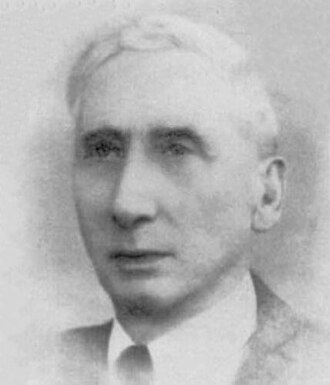

1875–1966
Italian
Probability, actuarial science
Francesco Paolo Cantelli was born in Palermo, Sicily. He studied mathematics at the University of Palermo before moving to Rome, where he spent most of his career as professor of actuarial mathematics at the University of Rome La Sapienza.
Cantelli’s work sits at the intersection of pure probability theory and its applications to insurance. His one-sided version of Chebyshev’s inequality — giving a tighter bound when you only care about deviation in one direction — is a staple of probability courses. Where Chebyshev gives $P(|X - \mu| \geq k\sigma) \leq 1/k^2$, Cantelli sharpens this to $P(X - \mu \geq k\sigma) \leq 1/(1 + k^2)$ for the one-sided case.
His name is most famously attached to the Borel–Cantelli lemma (1917), which he proved independently of Borel (1909). The first lemma states that if the sum of probabilities of a sequence of events converges, then the probability that infinitely many of them occur is zero. The converse, requiring independence, is the second Borel–Cantelli lemma. Together they are the technical workhorse behind almost sure convergence results, including the strong law of large numbers.
Cantelli also proved, with Glivenko, that empirical distribution functions converge uniformly to the true distribution — the Glivenko–Cantelli theorem, sometimes called the “fundamental theorem of statistics.” He was active well into old age, continuing to publish into his eighties, and died in Rome at ninety.
| Phase | Page | Referenced for |
|---|---|---|
| Phase 12 | Markov and Chebyshev Inequalities | Cantelli’s inequality: one-sided Chebyshev bound $P(X - \mu \geq k\sigma) \leq 1/(1+k^2)$ |
| Phase 12 | Markov and Chebyshev Inequalities | Examples comparing Chebyshev and Cantelli bounds |
| Phase 12 | The Law of Large Numbers | First Borel–Cantelli lemma (Cantelli 1917) |
| Phase 12 | The Law of Large Numbers | Second Borel–Cantelli lemma (converse, with independence) |
| Phase 12 | The Law of Large Numbers | Historical context: Borel (1909) and Cantelli (1917) |